Plugin de Vista Conjunta
El plugin de Vista Conjunta es la integración de los diagramas de Estados y Diagrama de Actividades. Su finalidad es poder utilizar los elementos de estos tres diagramas bajo un mismo espacio, destacando las posibles relaciones implícitas que puedan existir entre sus respectivos elementos a la vez que expande su semántica.
Los elementos propios de este diagrama son:
- Actividad (Actividad)
- Objeto (Actividad)
- Estado Inicial (Actividad)
- Estado Final (Actividad)
- Decisión (Actividad)
- Barra de sincronización (Actividad)
- Actor (Secuencia)
- Objeto (Secuencia)
- Transición (Secuencia)
- Transición Cíclica (Secuencia)
- Transición (Actividad)
Creación de un nuevo Diagrama de Vista Conjunta:
Colosoft
soporta el Plugin de Vista Conjunta mediante la creación de un nuevo
diagrama de Vista Conjunta.
Para la creación de un nuevo diagrama se selecciona en
el Marco de Expresión: Nuevo, Ingeniero de Sistemas, Diagrama de
Vista Conjunta.
Se ingresan los datos correspondientes al diagrama.
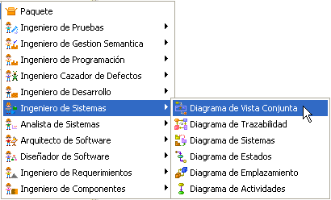
Figura 1. Creación de un diagrama de vista conjunto
Barra de herramientas del Plugin Diagrama de Vista Conjunta:
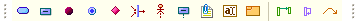
Figura 2. Amplia barra de herramientas disponibles en el plugin
Actividad: Para agregar una actividad se selecciona el icono Actividad.

Figura 3. Creación de una actividad
Aparecerá la venta de creación de una actividad. El dato mínimo requerido para crear la actividad es un nombre diferente de "anonymus". Opcionalmente se pueden digitar los campos de Estereotipo, Autor y Versión. Es posible ajustar las propiedades del contenedor (visible y editable) junto con las propiedades del elemento de grafo.
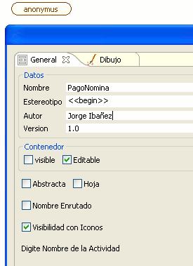
Figura 4. Datos para la creación de una actividad
El elemento gráfico de actividad posee dos iconos contextuales de expansión. El primero le permite crear una actividad predecesora (una actividad que conduce a la actual) y el otro para una actividad posterior a la actual. Adicionalmente posee el icono para generar notas sobre la actividad que poseen todos los elementos gráficos UML+ . Los elementos dentro de la actividad se organizan de arriba hacia abajo en:
- Estereotipo
- Nombre del autor
- Versión
- Nombre de la actividad
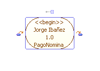
Figura 5. Representación de la actividad
Al crear una nueva
actividad de esta manera esta genera
automáticamente una transición sin etiqueta a una
nueva actividad vacía "anonymus"
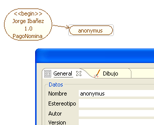
Figura 6. Creación de una actividad a partir de una existente
Objeto: Un objeto es la representación concreta o abstracta de una clase. La creación de un objeto puede estar basada en una clase de un Diagrama de Clases que este abierto actualmente dentro del entorno de trabajo, de donde tomará los atributos y las operaciones.
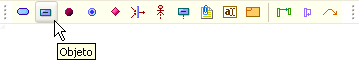
Figura 7. Botón de creación de un objeto
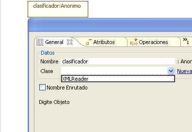
Figura 8. Escogencia de la clase plantilla
La clase plantilla para el objeto en el Diagrama de Vista Conjunta puede ser tomada como fuente de características de tres maneras diferentes, como Clase, Objeto o Combinado. Como clase el objeto en el diagrama tomará los atributos y las operaciones de la clase plantilla, mientras que como objeto solo generará la asociación a ese tipo sin tomar sus atributos ni operaciones.
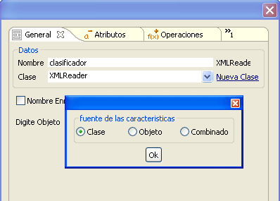
Figura 9. Fuente de características del objeto
Si no se tiene una clase plantilla desde un Diagrama de Clases, es posible crear una nueva clase propia, que será contenida en un Diagrama de Clases previamente creado.
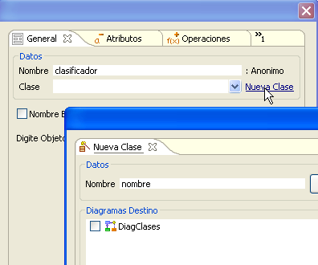
Figura 10. Escogencia de la clase plantilla
Al hacer clic en editar se abrirá una pantalla que contiene los elementos para la creación de un a clase vistos en el Diagrama de Clases . En éste se podrá generar todos los elementos necesarios de la clase para que esta sea usada como plantilla para el objeto en el Diagrama de Vista Conjunta sobre el que se esta generando dicho elemento.
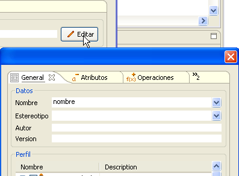
Figura 11. Creación de una nueva clase plantilla
Estado Inicial: El estado inicial es el punto del cual va a partir un diagrama de actividades .Su icono de creación corresponde a un círculo rojo que se encuentra en la barra específica del marco de Diagrama de Vista Conjunta.

Figura 12. Creación de un estado inicial
Al igual que con otros elementos de este marco el dato mínimo requerido para generar el elemento de Estado Inicial es un nombre diferente de anonymus. Adicional a ésta las propiedades comunes del contenedor y el elemento gráfico.

Figura 13. Datos básicos para la creación del estado inicial
Para el estado inicial es posible generar un conjunto de actividades, transiciones y particiones con las cuales esta asociado.
Estado Final: Es el estado en el cual un Diagrama de actividades que se esta trabajando finaliza. Corresponde al circulo azul en la barra específica del marco de actividades.
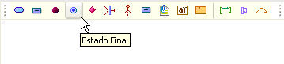
Figura 14. Creación de un estado final
Al igual que con los otros elementos solo es necesario ajustar el nombre y opcionalmente al igual que con Estado de Inicio, las actividades y transiciones asociadas a este elemento.
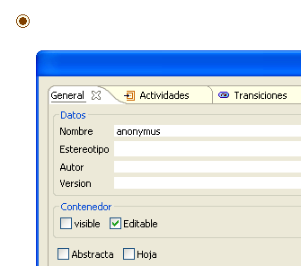
Figura 15. Ingreso de nombre del estado final
Decisión: Una decisión permite generar una división en el flujo de actividades de acuerdo a una cierta condición. El icono correspondiente en la barra de específica del marco es el rectángulo rojo.
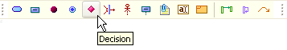
Figura 16. Creación de una decisión
Los parámetros son iguales que para los otros elementos gráficos vistos, es decir un nombre diferente de anonymus y opcionalmente parámetros de actividades, transiciones y divisiones. Es propio de este elemento generar varias transiciones con tipos de guardas diferentes.
La forma de generar transiciones desde y hacia una Decisión es igual a la de otros elementos de este diagrama. Un ejemplo de como se debería utilizar una decisión en coloso es la siguiente.
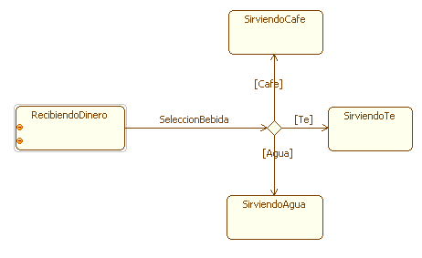
Figura 17. Decisión hacia tres nodos
Barra de Sincronización
Con
este subestado es posible reunir varias
transiciones y
canalizarlas hacia una sola. Para crear una barra de sincronización
se selecciona el icono correspondiente en la barra específica
del
marco.
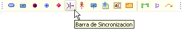
Figura 18. Creación de la barra de sincronización
La barra de sincronización permite la personalización de propiedades gráficos al momento de su creación y posteriormente: color de contorno, fondo, sombreado y la posición bien sea vertical u horizontal de la barra.
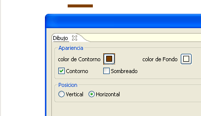
Figura 19. Personalización de la barra de sincronización
Actor: Un Actor genera eventos al sistema y requiere como respuesta alguna operación de este. El Actor posee su línea de vida y esta asocaido a alguna clase como objeto, Clase, o combinado de ambas.
Para crear un nuevo Actor se hace clic sobre el icono Actor y luego se hace clic sobre un espacio del diagrama.
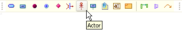
Figura 20. Creación de un actor
Ventana de Especificación de Actor: en esta se puede cambiar el nombre del clasificador. Es posible relacionar al Actor con una clase, bien sea que esta exista en un Diagrama de Clases que se encuentre abierto dentro del proyecto, seleccionado una entrada de la lista desplegable Clase; o bien asociandolo a una calse nueva en un diagrama de clases existente, seleccionando "Nueva Clase", esto abrirá una ventana que permite especificar el nombre de una nueva clase y editarla con la ventana de especificación de una Clase (Ver Plugin de Clases).
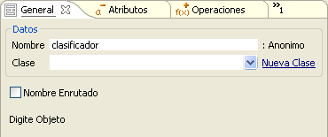
Figura 21. Atributos generales del actor
Seleccionada la clase relacionada con el Actor se escoje el tipo de asociación Clase, Objeto o Combinado
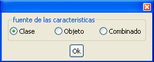
Figura 22. Fuente de características del actor
El Actor mostrará en las siguientes pestañas de su ventana de especificación los Atributos y Operaciones de la clase escogida, bien sea como Clase, Actor o ambos, asociación que se escoge al momento de seleccionar o modificar la clase.
Los Atributos y Operaciones modificados o creados desde la especificación del Actor, también repercutieron sobre las clase asociada, tenga cuidado de no dañar la semántica deseada en el respectivo diagrama de clases.
El Actor recién creado luce como se muestra en la Figura 23.
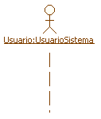
Figura 23. Representación del actor
Objeto: Aquellos que interactúan con el actor y entre ellos mediante el envio de mensajes y acciones, dentro de una secuencia determinada generalmente por un caso de uso. Los objetos son instancia de las clases que en algún momento participan de la interacción.
Para crear un nuevo Objeto se hace clic sobre el icono objeto y luego se hace clic sobre un espacio del diagrama.
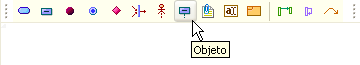
Figura 24. Creación de un objeto
Aparece la ventana de especificación del nuevo objeto, en esta se puede cambiar el nombre del clasificador. Es posible relacionar al Objeto con una clase, bien sea que esta exista en un Diagrama de Clases que se encuentre abierto dentro del proyecto, seleccionado una entrada de la lista desplegable Clase; o bien asociando una calse nueva a un diagrama de clases existente, seleccionando "Nueva Clase", esto abrirá una ventana que permite especificar el nombre de una nueva clase y editarla con la ventana de especificación de una Clase (Ver Plugin de Clases).
Figura 25. Datos de creación del objeto
Seleccionada la clase relacionada con el objeto, se escoge el tipo de asociación Clase, Objeto o Combinado
Figura 26. Fuente de características del objeto
El objeto mostrará en las siguientes pestañas de su ventana de especificación los Atributos y Operaciones de la clase escogida, bien sea como Clase, Objeto o ambos, asociación que se escoge al momento de seleccionar o modificar la clase.
Los Atributos y Operaciones modificados o creados desde la especificación del objeto, también repercutieron sobre las clase asociada, tenga cuidado de no dañar la semántica deseada en el respectivo diagrama de clases.
El objeto recién creado luce como se muestra en la Figura 27.
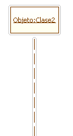
Figura 27. Representación del objeto
Transiciones: representan las interacciones entre los objetos, inician desde focos de control que son pequeños rectángulos sobre las líneas de vida, partiendo desde el objeto u actor de partida, hacia los foco de control sobre la línea de vida del objeto receptor. las transiciones pueden ser mensajes simples, también pueden ser mensajes de creación o destrucción de objetos o pueden ser mensajes síncronos o asíncronos, síncronos si hay o no una respuesta automática al mensaje.
Para crear una nueva transición se hace clic en el icono transición y luego se hace clic sobre la línea de vida del objeto o actor que envía la transición.

Figura 28. Creación de una transición
Luego se hace clic sobre la línea de vida del objeto receptor del mensaje. No es necesario alinear verticalmente la transición, despues de su especificación esta será recta y a la altura del foco de partida.
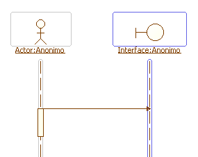
Figura 29. Transición entre actor e interfaz
Al crear gráficamente la transición, se muestra la ventana de especificación de la transición, en esta se puede cambiar el nombre de la transición y el tipo del Retorno. Se especifica el tipo de la transición de entre Mensaje, Creación y Síncrono
Si el tipo seleccionado es de Creación, el objeto receptor del mensaje iniciaría su línea de vida en el foco de recepción de la transición. La cabeza de la flecha de la transición cambia de rellena a simple.
Si el mensaje es Síncrono se espera un a respuesta automática del Objeto Receptor.
Selección Icono para mostrar un icono de la representación de la visibilidad de la Transición.

Figura 30. Operaciones de la transición
Haciendo clic en el botón msj/ret de puede establecer una respuesta al la transición que se esta creando. Escriba el nombre correspondiente y seleccione la casilla Visible.
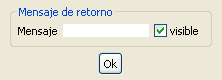
Figura 31. Ingreso del valor de retorno de la transición
Puede agregar o eliminar argumentos de la Transición, como tal la transición es un llamado a una operación del objeto receptor y por lo tanto tiene argumentos y visibilidad y alcance.
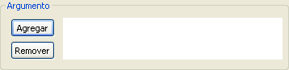
Figura 32. Argumentos de la transición
Seleccione Agregar y Especifique el Nombre, Tipo y Valor del argumento.Escoja la dirección de este In, Out, In-Out.
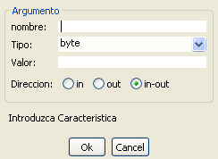
Figura 33. Datos básicos para la creación de un argumento
Seleccione La visibilidad de la transición, el Alcance de esta, y su tipo de Implementación (Abstracta o no); puede agregar código de la implementación seccionando el botón Cod/Com.
También puede utilizar los Modificadores Sincronizada, Garantizada, Consulta y Hoja.
Los servicios Disponibles corresponden con todas las Operaciones asociadas al Objeto Receptor de la Transición, seleccione los servicios relacionados con la transición; las nuevas transiciones serán guardadas como operaciones en la clase asociada al Objeto Receptor y por lo tanto seleccionables desde este campo por otras Transiciones.
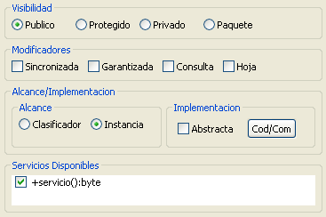
Figura 34. Visibilidad, Modificadores, Alcance/Implementación y Servicios de un argumento
Un Transición luce como se aprecia en la Figura 35.
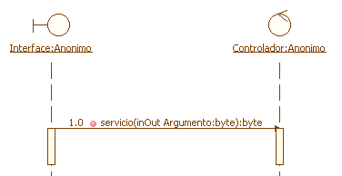
Figura 35. Transición con diferentes elementos ingresados
Note la numeración a la izquierda del icono de visibilidad de la transición (publico en este caso). Es conveniente mantener las transiciones numeradas y en orden para poder seguir la secuencia fácilmente. Para editar este número haga doble clic sobre este y escriba la numeración correspondiente.
Para editar el Tamaño del cuadrado del Foco de Control haga clic sobre este, aparecerán redimencionadores, arriba y abajo del Cuadrado,
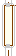
Figura 36. Tamaño de la transición
Haga clic sostenido sobre estos y arrastre el cursor hasta obtener el tamaño deseado.
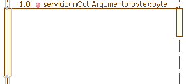
Figura 37. Aumento de la longitud en la relación
Puede Cambiar la posición del foco de control, haga clic sostenido sobre la línea de la transición y arrastre con el cursor. Los dos focos de control involucrados se desplazaran.
Transiciones Anidadas: las transiciones anidadas presentan un foco de control superpuesto a otro foco de control en la misma línea de vida. Representan el paso del Foco de control por parte de alguna operación del objeto, hacia otra operación del mismo objeto o bien representan llamados recursivos.
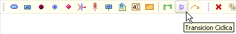
Figura 38. Creación de transición cíclica
Una forma de crear Transiciones anidadas sucede cuando el segundo llamado es originado por el mismo objeto pero su destino es otro objeto receptor. Para representar esto, basta con seleccionar el icono Transición y luego hacer clic sobre un foco de control receptor de otra transición, automáticamente su área se expande para albergar el nuevo foco de control. haga clic sobre la línea de vida del correspondiente objeto receptor de esta segunda transición.
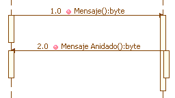
Figura 39. Representación de la transición cíclica
Los llamados recursivos se crean explícitamente, haga clic sobre el icono Transición Cíclica y luego haga clic sobre una línea de vida de algún objeto. La transición cíclica también puede ser anidada. Posteriormente haga clic sobre el Icono Transición cíclica y luego sobre algún foco de control receptor de Transición.
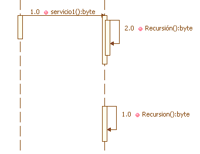
Figura 40. Transición cíclica anidada y no anidada
Transición: La transición es uno de los
elementos mas importantes del diagrama, ya que permite conectar las
actividades, Estado de Inicio, Estado de Fin y todos los otros
elementos del esquema. El icono de transición corresponde al de
una flecha curva en la barra específica del marco
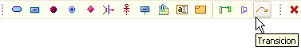
Figura 41. Creación de una transición simple
Para generar una conexión mediante una transición primero se debe hacer clic en el icono, posterior a esto se hace clic dentro del área de trabajo sobre el elemento origen, es decir, de donde proviene el flujo del diagrama
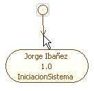
Figura 42. Representación de la transición
Posterior a esto se hace clic sobre el elemento destino, es decir, hacia donde se dirige el flujo. Uno vez hecho esto se abre el diálogo para generar los parámetros para dicha transición
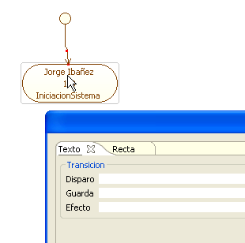
Figura 43. Ingreso de datos básicos de la transición
Los parámetro de disparo, guarda y efecto son opcionales, la transición puede ser generada con ninguno o algunos de ellos. El disparo se presenta en primer lugar, la guarda se presenta entre corchetes cuadrados "[ ]" y por último el efecto se separa mediante "/"
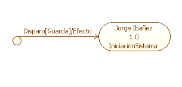
Figura 44. Representación de diparo, guarda y efecto en la transición
Así como con otros elementos gráficos de conexion en
UML+, es posible modificar la presentación de éste, tanto
en color como en forma que se va a dibujar la conexión.
Uso Conjunto: Utilice los elementos del diagrama de vista Conjunta de forma libre para crear partes de un diagrama de actividades y partes de diagramas de secuencia que se relacionan entre sí mediante alguna transición entre sus elementos. También puede utilizar los frames para expandir el nivel de vista de algún elemento o para visualizar un diagrama externo que se relacione con el diagrama de vista conjunta.
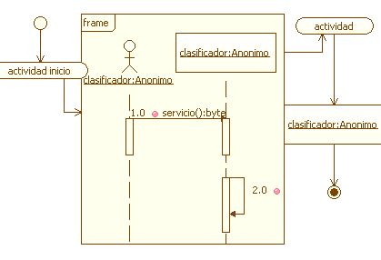
Figura 45. Diferentes elementos en conjunto en un diagrama de vista conjunta